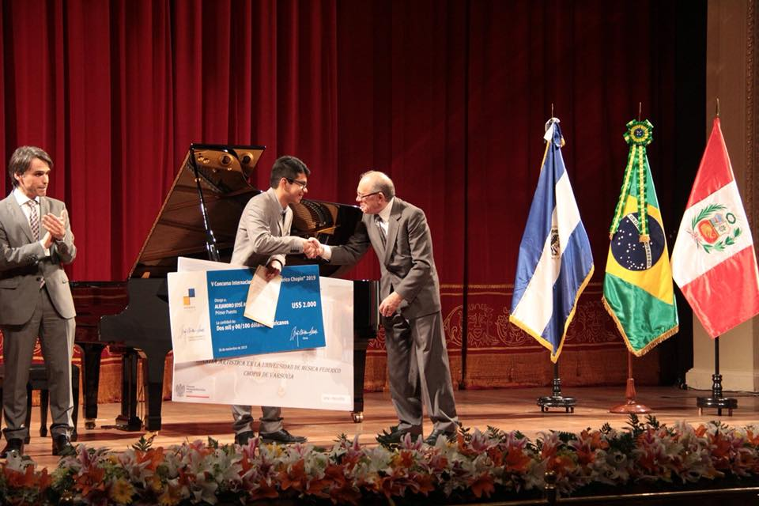
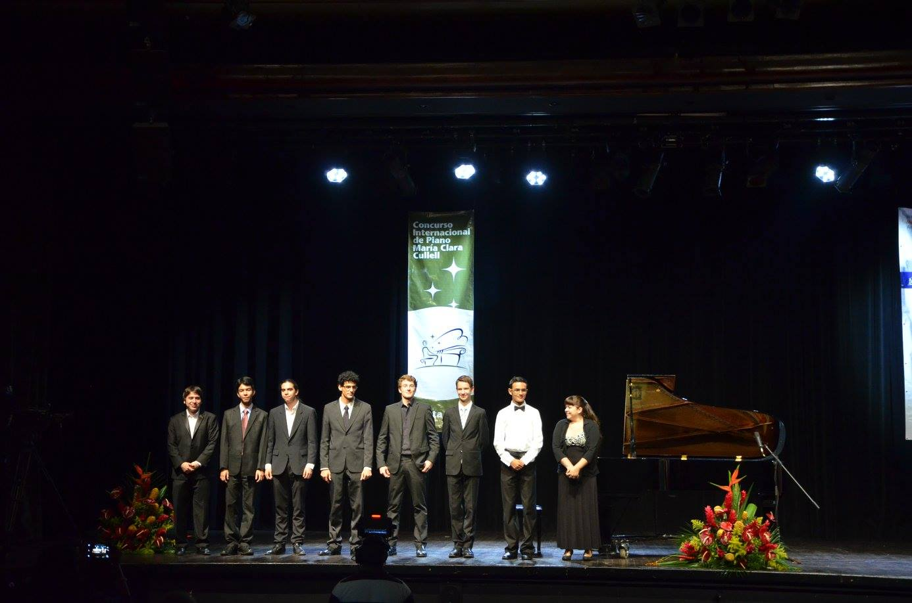
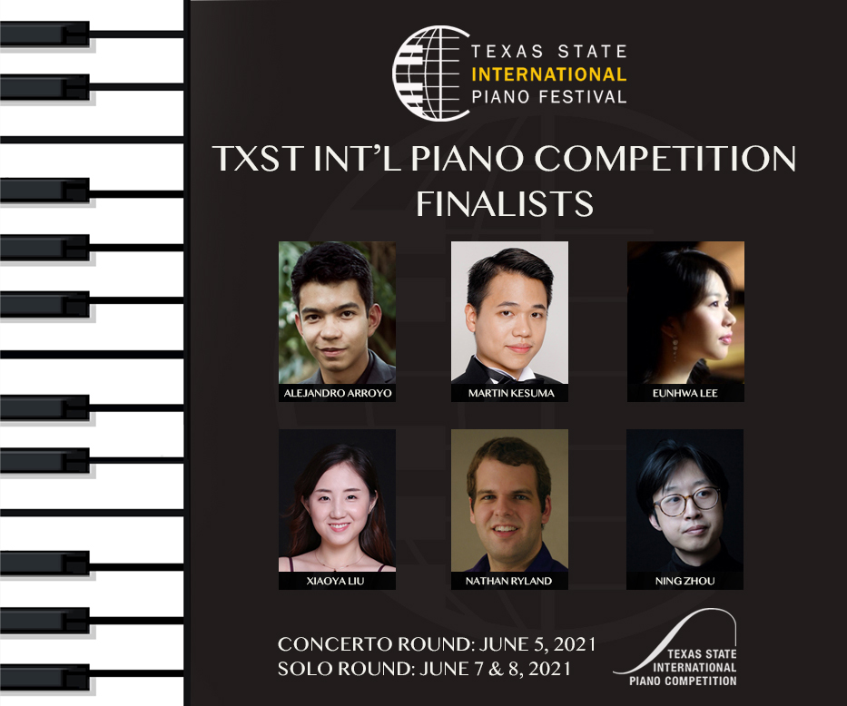
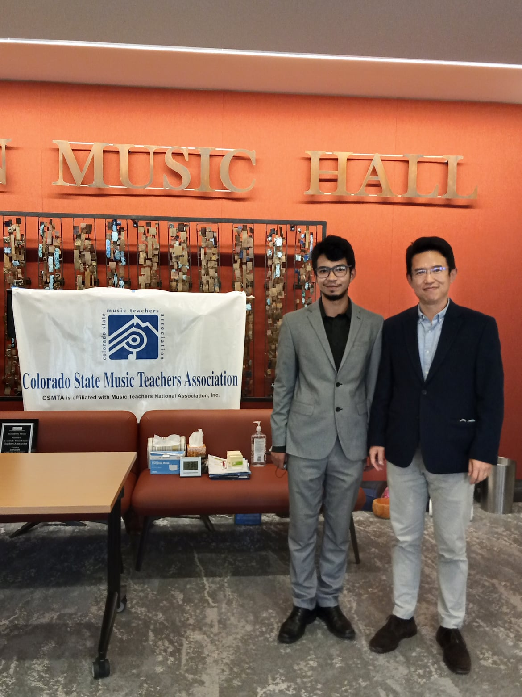
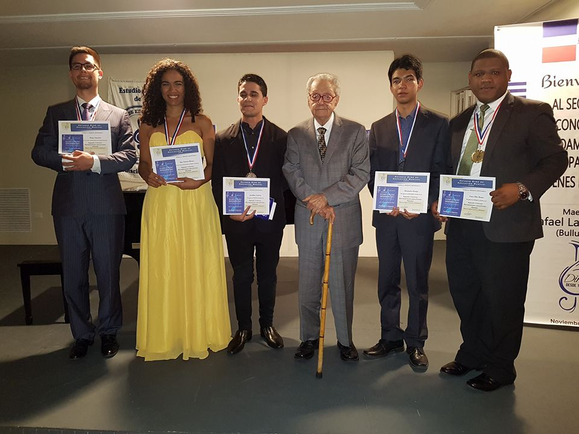
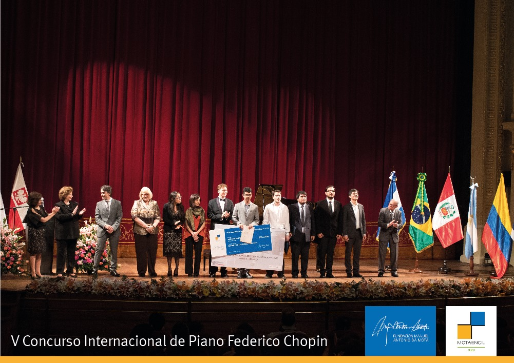
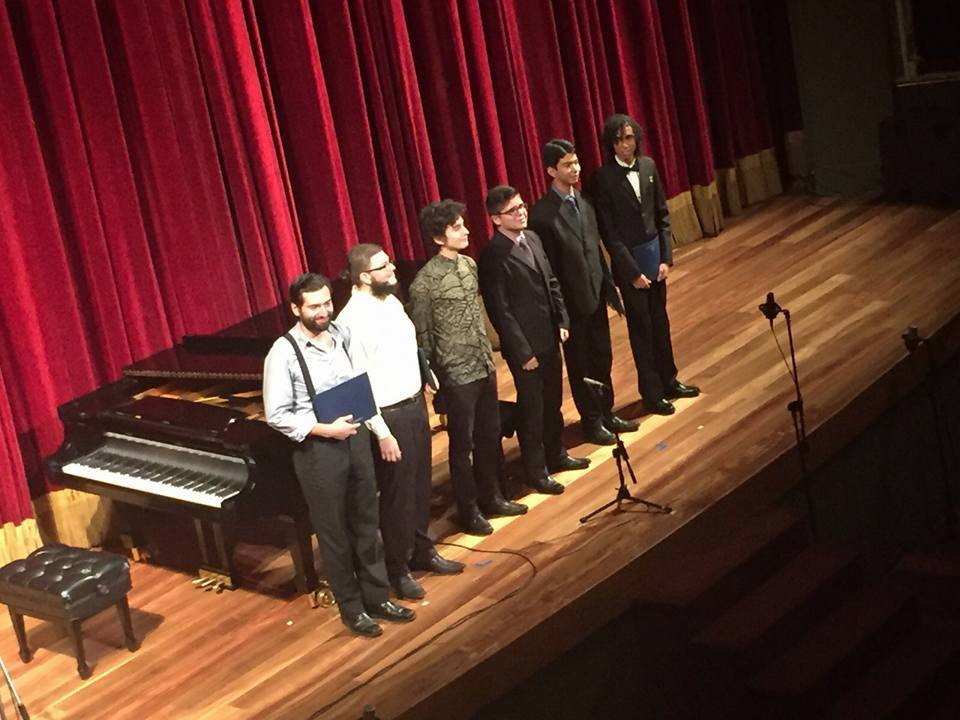
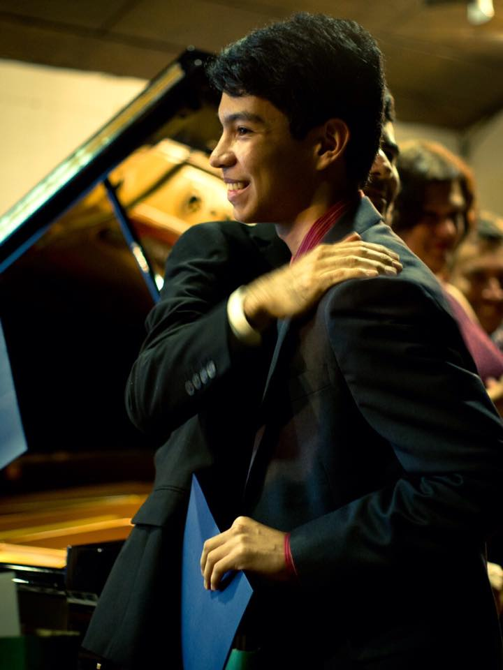
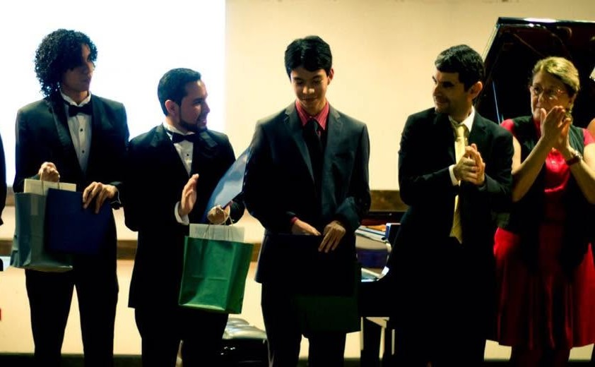
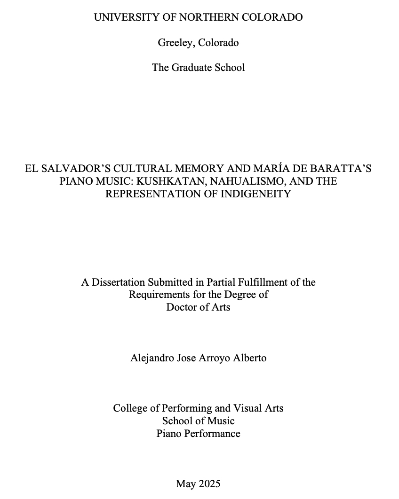

Premios y Reconocimientos
- 🏆 Primer Premio en el Concurso Southard (Estados Unidos, 2024)
- 🥈 Segundo Premio en el Concurso de Solistas de la UNC (Estados Unidos, 2023 y 2024)
- 🏅 Cuarto Premio en el Concurso Internacional Yamaha José Jacinto Cuevas (México, 2023)
- 🏆 Premio a la Obra Comisionada y Finalista en el Concurso Internacional de Piano de Texas State (Estados Unidos, 2022)
- 🥇 Primer Premio en el Concurso del Capítulo Alumni de Mu Phi Epsilon en Denver (2021 y 2022)
- ⭐ Estudiante Destacado de la UNC (2021, 2022, 2023)
- 🥇 Primer Premio en el Young Artist Piano MTNA Colorado State Competition (2020 y 2021)
- ✨ Mencionado en la lista “Los Más Creativos del 2020” – Forbes Centroamérica
- 🥇 Primer Premio en el Concurso Fryderyk Chopin para Centro y Sudamérica (Perú, 2019)
- ⭐ Estudiante Destacado de la Universidad de Costa Rica (2018)
- 🏆 Ganador del Concurso de Jóvenes Solistas OSN (Costa Rica, 2017)
- 🥈 Segundo Premio en el Concurso Internacional Musicalia (Cuba, 2017)
- 🥈 Segundo Premio en el Concurso Iberoamericano para Jóvenes Pianistas (República Dominicana, 2016)
- 🏆 Ganador del Concurso de Solistas Universitarios (Costa Rica, 2015, 2017, 2019)
- 🥇 Primer Premio del Concurso Nacional Piano Latinoamericano (Costa Rica, 2016)
- 🥇 Primer Premio en la Categoría Avanzada del Concurso Internacional María Clara Cullell (Costa Rica, 2015)











Publicaciones Académicas
El Salvador’s Cultural Memory and María de Baratta’s Piano Music: Kushkatan, Nahualismo, and the Representation of IndigeneityEl Salvador’s Cultural Memory and María de Baratta’s Piano Music: Kushkatan, Nahualismo, and the Representation of Indigeneity (UNC, 2025).
Reconocida con la Distinción del Decano a la Disertación Doctoral Sobresaliente.
Leer en el repositorio UNC